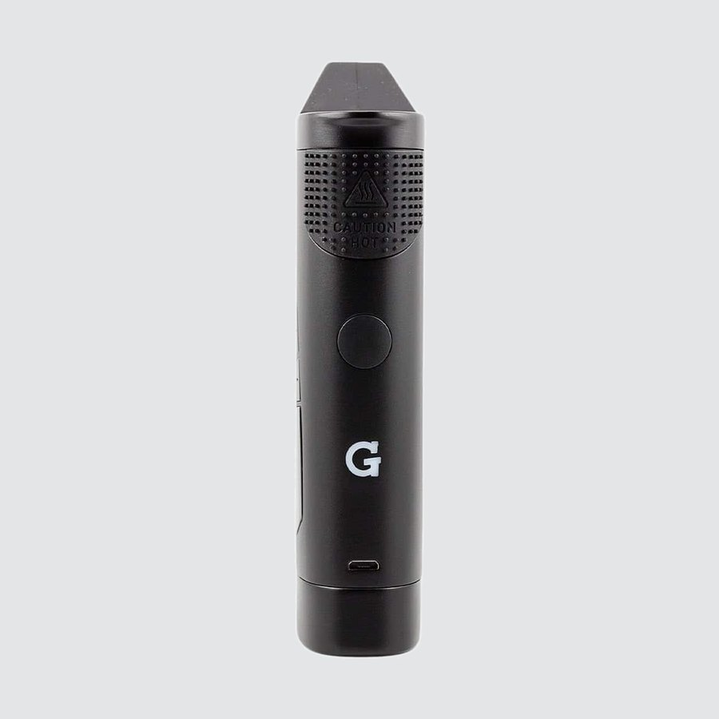
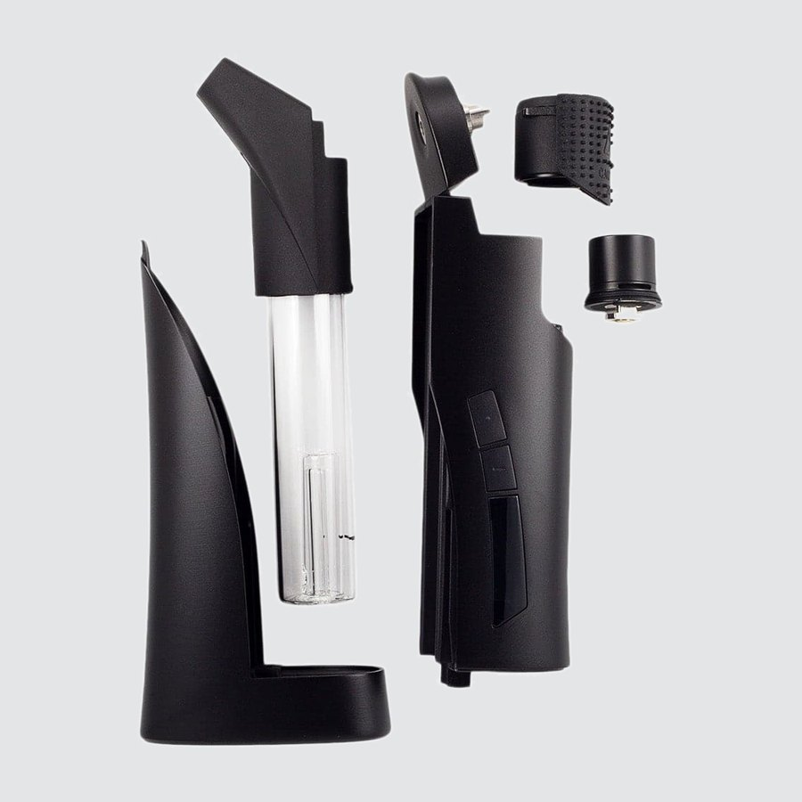
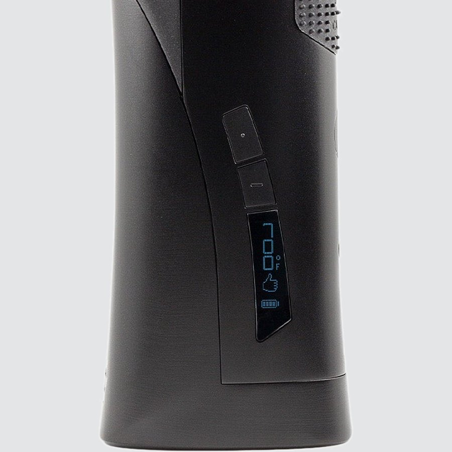
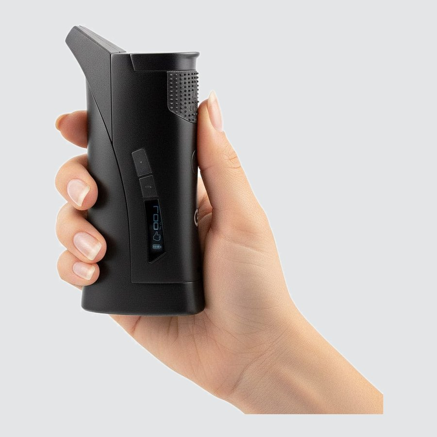
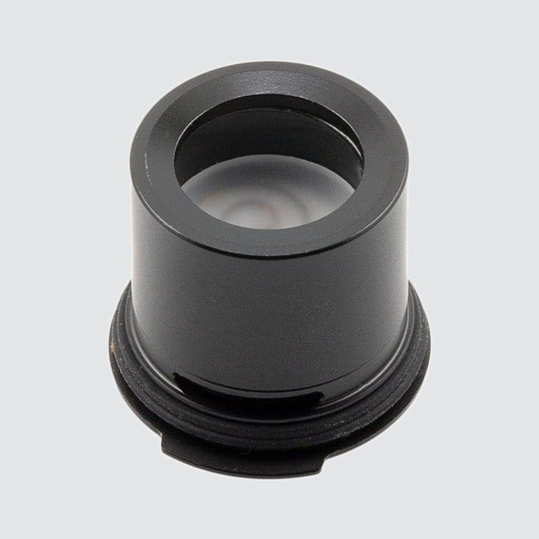

Using your
G Pen Roam
Register your productHow to use
-

1Charge
- Plug a Micro USB cable into the port on the front of the battery.
- Give it a full charge before first use. It takes less than 90 minutes with a 1A charger.
- The battery level shows on the LED screen.
Full charge: about 15 automatic heat sessions. You can also use the Roam while it's plugged in.
-

2Fill & Load
- Fill the glass tube with water, no higher than the etched water line.
- Place your concentrate onto the heating element in the quartz tank with the included G Pen tool.
- Put the tank cover back on before you heat.
Hot surface: wait at least 5 minutes after heating before you handle the tank cover.
-

3Set Temperature
- Press the power button 5 times to turn on or off.
- Use the two buttons above the screen to set the temperature, from 600°F to 800°F (315°C to 425°C) in 25° steps.
5×Power on / off Power button on the front of the battery▲▼Adjust temperature Up / down in 25° stepsMAXMax mode At 800°F, press up once more for full powerHold°F / °C Hold power + up for 3 secondsMax mode gives full power with no temperature control. If the Roam overheats, a warning hand shows and it stops heating until it's back to a safe temperature.
-

4Heat & Draw
- Press the power button twice to start heating.
- The Roam vibrates when it reaches your temperature. Start drawing from the mouthpiece.
- It stays at temperature for 30 seconds, then vibrates again before it stops heating.
2×Auto heat Heats, vibrates, holds for 30 seconds2×Add 10 seconds Press twice right after heating stops2×Cancel heat Press twice while it's heatingHoldManual heat Hold the power button · up to 30 seconds -

5Clean
- Let it cool first. Use cotton swabs and isopropyl alcohol on the quartz tank, tank cover and silicone mouthpiece.
- The silicone airflow strip at the back of the battery comes off so you can clean it separately.
- When you put the quartz tank back, line up the tab on its bottom with the cavity in the tank cover.
Upgrades
Replacement parts for your Roam.


Specs
View Product Details
| Type | Portable E-Rig |
|---|---|
| Battery | 1,300 mAh · about 15 automatic heat sessions per charge |
| Charging | Micro USB · less than 90 minutes at 1A · pass-through |
| Temperature range | 600°F to 800°F (315°C to 425°C) · 25° steps · Max mode |
| Heat modes | Auto: 30 seconds (+10 seconds) · Manual: up to 30 seconds |
| Chamber | Quartz tank |
| Water filtration | Borosilicate glass tube |
| Display | LED · temperature and battery level |
| In the box | Roam, travel case, Micro USB cable, G Pen tool |
| SKU | GPR-001‑AIZZ |
| UPC | 811736022620 |
Help
Common questions
The screen shows an X
An X pointing up toward the heater means a short circuit or a connection problem. Check that the quartz tank is seated properly, then try again.
A hand symbol is on the screen
The Roam has overheated. It stops heating until it's back to a safe temperature, then you can use it again.
How do I switch between °F and °C?
Hold the power button and the temperature up button together for 3 seconds.
How much water goes in the glass tube?
Fill it no higher than the etched water line on the tube.
How long does a charge last?
A full charge gives about 15 automatic heat sessions. Charging takes less than 90 minutes with a 1A charger, and the battery level shows on the LED screen.